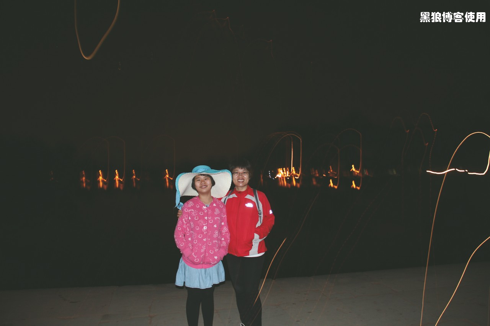
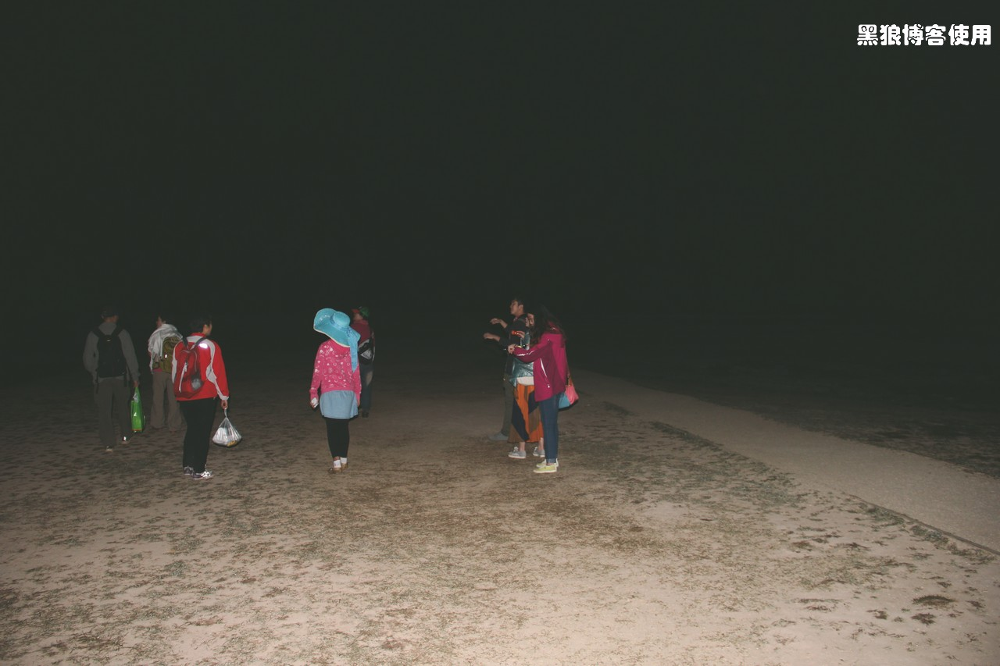
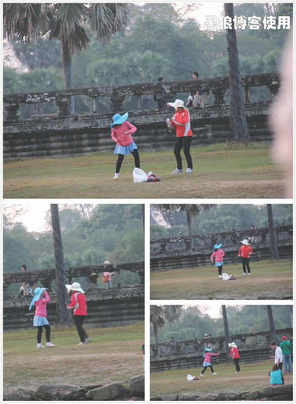
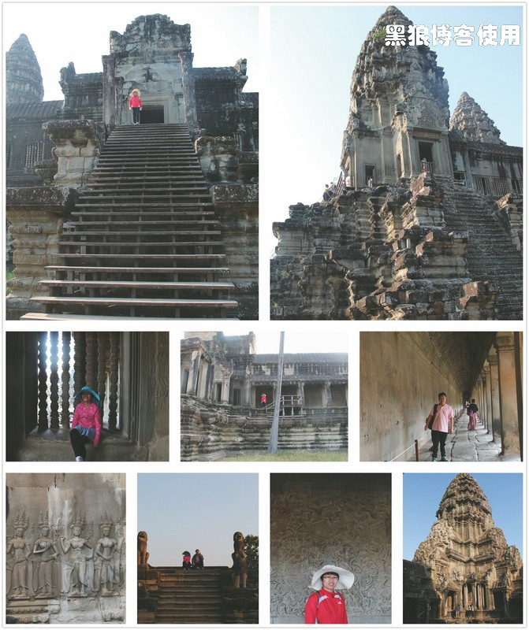
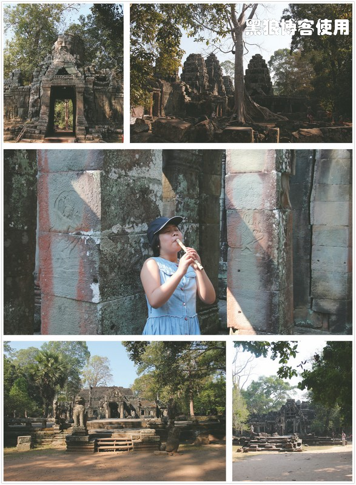
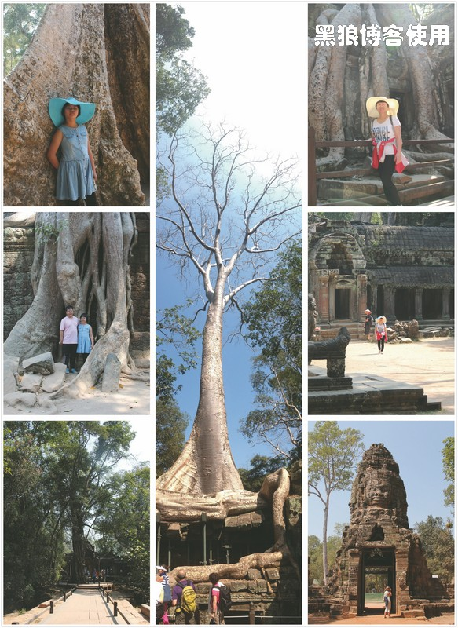
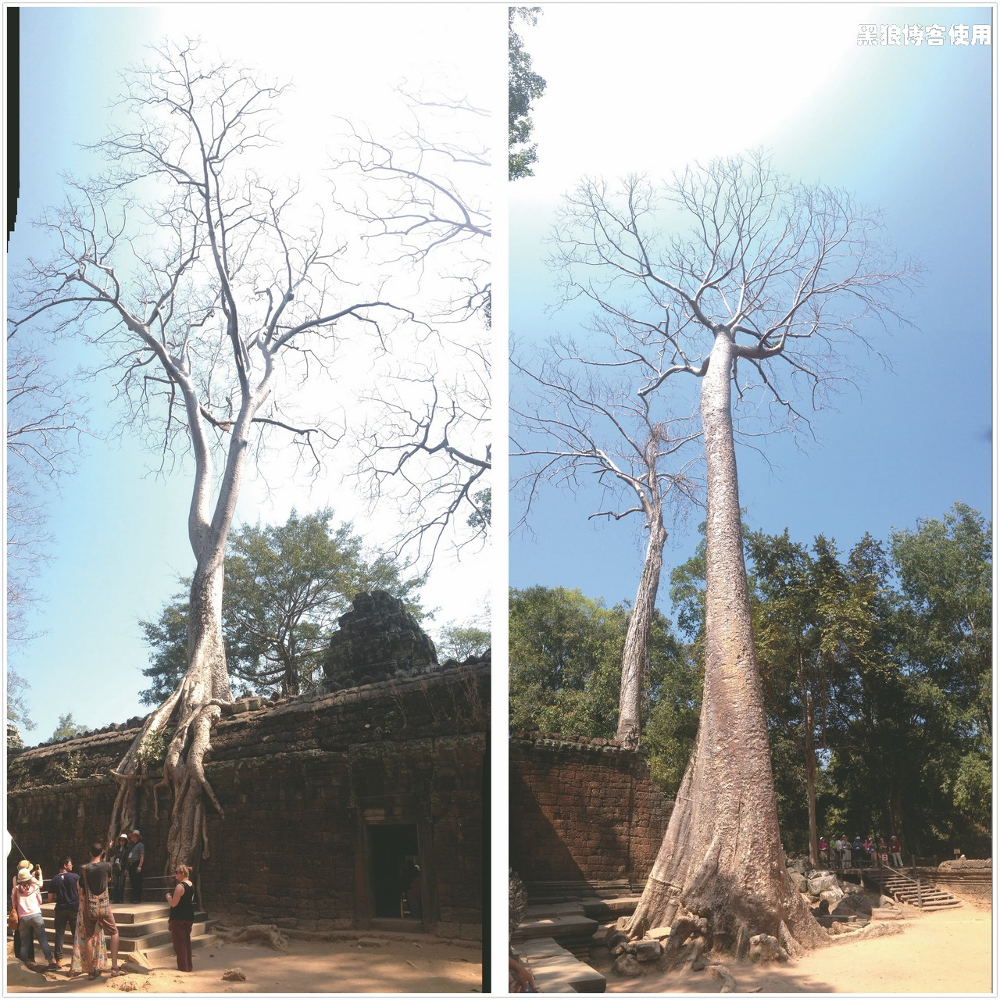
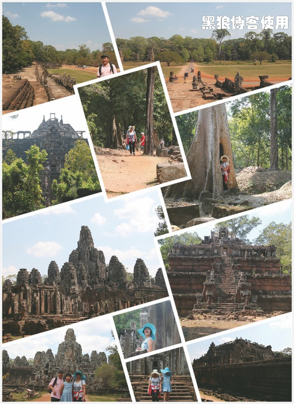
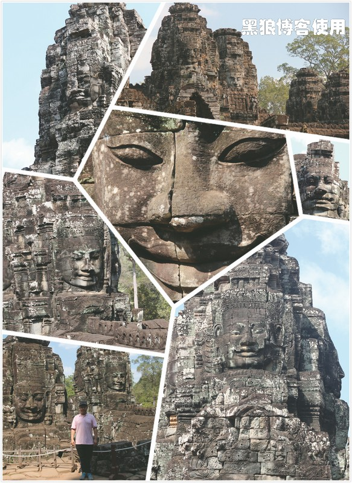
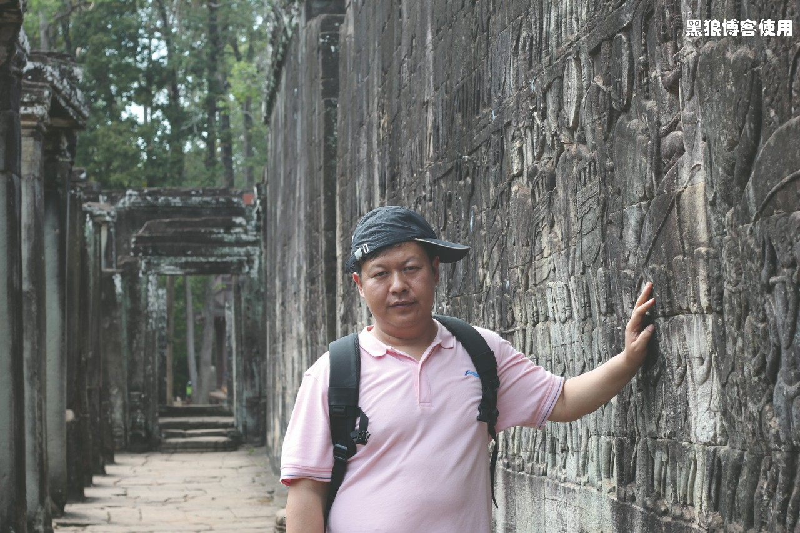

柬埔寨自助游（3）
黑狼语录：
—— 贵吗？ 从柬埔寨回来后，我改变了我的想法。
在柬埔寨的暹粒，超市商品的价格比北京要高，这里的商品大部分都是进口的。还有，在北京药店 4 元人民币的药，在这里至少要 2 美金，还可以打开包装，散着买。
昨天（1 月 27 日晚）回到宾馆，直接去机场取那件行李，宾馆帮着叫了一辆突突车，来回 16 公里，车费 6 美金。直接到了机场取行李的地方（没人询问），看见了自己那件久违的行李。意外地获得了40 美金的延误赔偿，也算大慰我心了。
昨天（1 月 27 日晚）没有去吃披萨饼，因为今天（28 日）要起大早，4:30出发看日出。今天的路线是吴哥的小圈，继续包车，还是那个司机，费用 30 美金，今天有 9 人，又是那辆奔驰大面包。
一大早起 来，人迷迷糊糊，照出来的照片也感觉很‘困’呢，居然有很多‘迷迷糊糊’的光线。
5 点钟就到了第一站：吴哥寺。这里有两个池塘，是观日出的好地方。
我们一行 9 人赶到右侧池塘的时候，居然一个人都没有，与传说中的“人满为患”相差太远，呆了有 10 分钟，还是不见有人过来，发现游客都去了左侧的那个池塘，大家商量了一下，决定从众。
（照片里面为何只有 8个人，猜猜我去哪里了？）
走到左侧的池塘，果然有不少人都围在了池塘边上，还有空位，虽然人多，比国内还是差了不少。
离太阳出来还有大把的时间，有云，先拍一张找找感觉。
等待日出的无聊时光中，胡有理和大包子在远处“拳来拳往”，也不知道是在抵御“寒冷”，还是在爆发冲突，难道又像以前写的博文那样《2012-04-28爆发了！拳来拳往！》。
吴哥寺就是吴哥窟，这里的建筑、浮雕在吴哥是保持得最完好的地方，被誉为古代东方的四大奇迹之一（还包括中国的万里长城）。
出了吴哥寺后，为了避免人多，我们让司机反向绕小圈。
10:30 第二站班黛咯蒂。一进门，大包子买了 2 个小笛子，1 美金一个，没想到里面更便宜，只要 3000 瑞尔一个。
出寺庙门走向汽车的时候，一个小女孩推销她的珠串和雕刻的小牌，大包子对着小女孩频频指手画脚，我警告她如果不买的话不要搭讪，关汽车门准备出发的时候，大包子更是对着小女孩频频点头，好像很遗憾车门关的有点早了。哎 ……，也不知道怎么就触动了大包子的捣蛋举动，以前没发生过这样的事情啊。
11:30 紧挨着就是塔布隆寺，这个寺庙很多地方被丛林所吞噬。这里的树太高大了，有几张照片是用手机的全景模式拍的。
下面的两颗大树也是全景模式拍的。
12:30 最后一站大吴哥城，曾经的吴哥王朝国都，城内有巴戎寺、巴方寺、空中宫殿等等好几个建筑群。大吴哥城和吴哥寺的建筑都是佛教的风格。
巴戎寺，有著名的吴哥微笑，笑得最甜的就是我旁边的那张脸。49 座佛塔均为巨大的四面佛雕像，共 196 张大脸。
和昨天一样，到后来匆匆走过那些古迹，没有深入其中。如果有时间的话，一个个慢慢看过去，会有更多的收获。
晚上，大包子迫不及待地领着我们去吃意大利披萨饼，结果，地图看反了，南辕北辙，只好在 old market 旁的酒吧街吃了一顿，约好明天再去找披萨店。
我和胡有理在拍照片选景上也是有些不同意见的，我始终认为，如果照片中没有人物的话，那它就不够鲜活，不会让我们自己有多次观赏的欲望，所以我拍摄的照片绝大部分都是以人为本。
